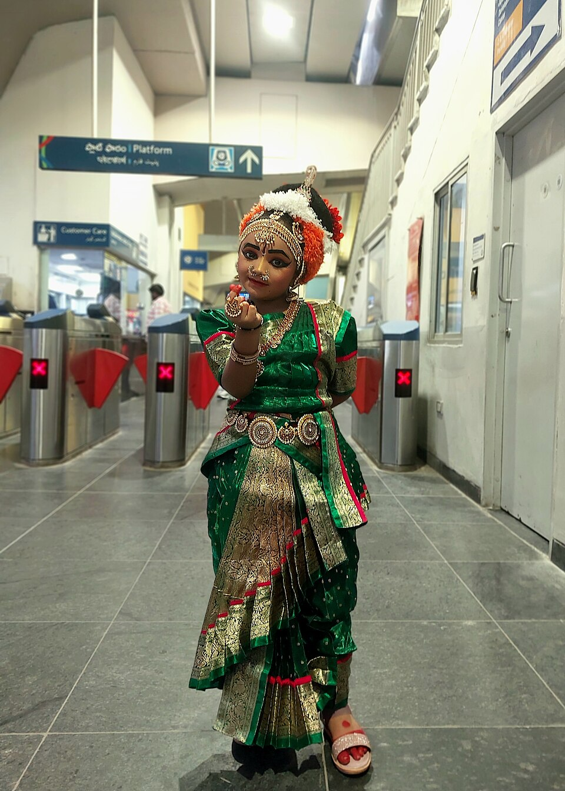
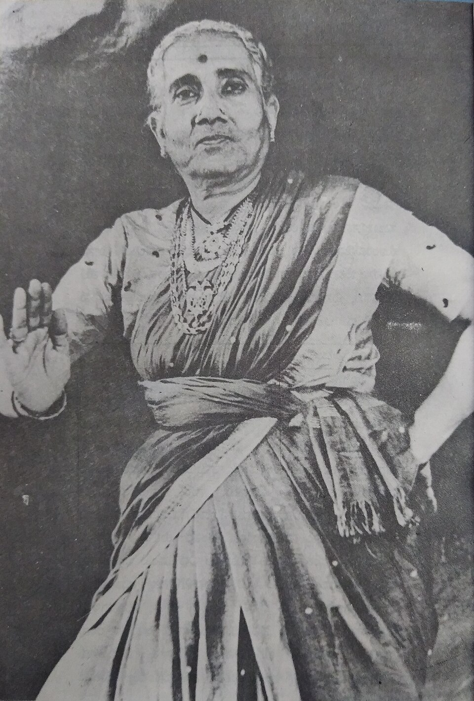
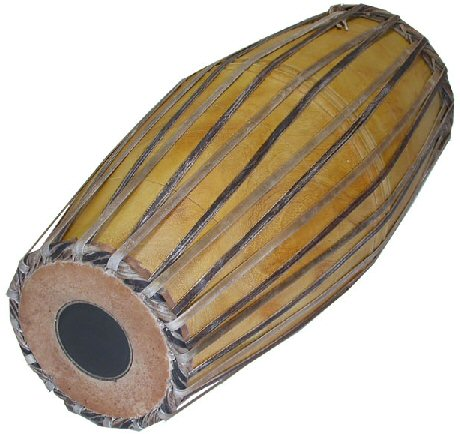
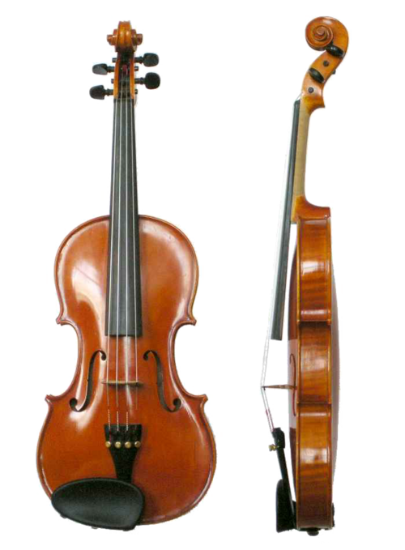
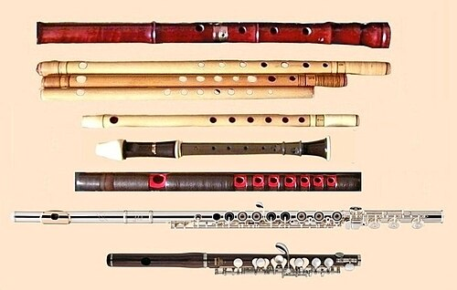
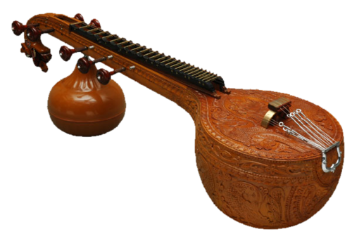
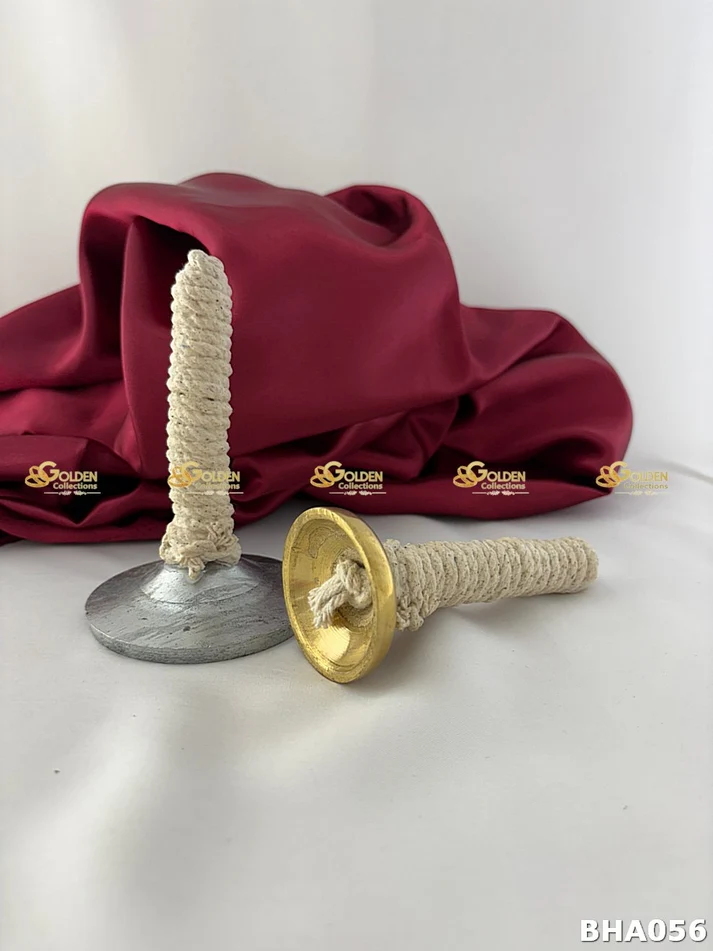

Gallery and Music
Explore the beauty of Bharatanatyam through its traditional dance poses, costumes and performances.
Image Gallery
Swipe, use the arrows or tap a dot. Click any picture to open it full size.





Music and Instruments
Bharatanatyam performances are traditionally accompanied by Carnatic music. Instruments such as the mridangam, violin, flute and veena help create the rhythm and melody of a performance.
Instruments of the Orchestra
-

MridangamA two-headed drum that keeps the rhythm
-

ViolinFollows the melody of the singer
-

FluteAdds melody and colour
-

VeenaA plucked string instrument
-

NattuvangamCymbals played by the guru, who also recites the rhythm syllables
Listen to the Rhythm
Press play to hear a short demonstration of Adi Tala, the eight-beat cycle used in many Bharatanatyam pieces.
Open the Adi Tala rhythm demo »
Learn More
Open the guide to learn more about Bharatanatyam and its traditional elements.